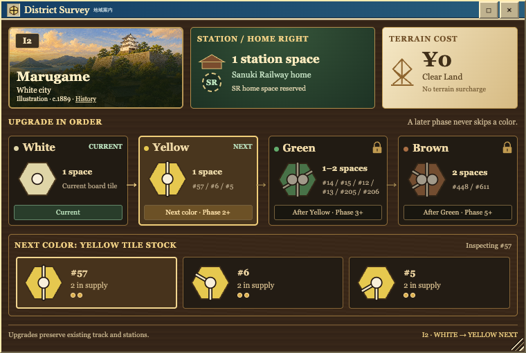
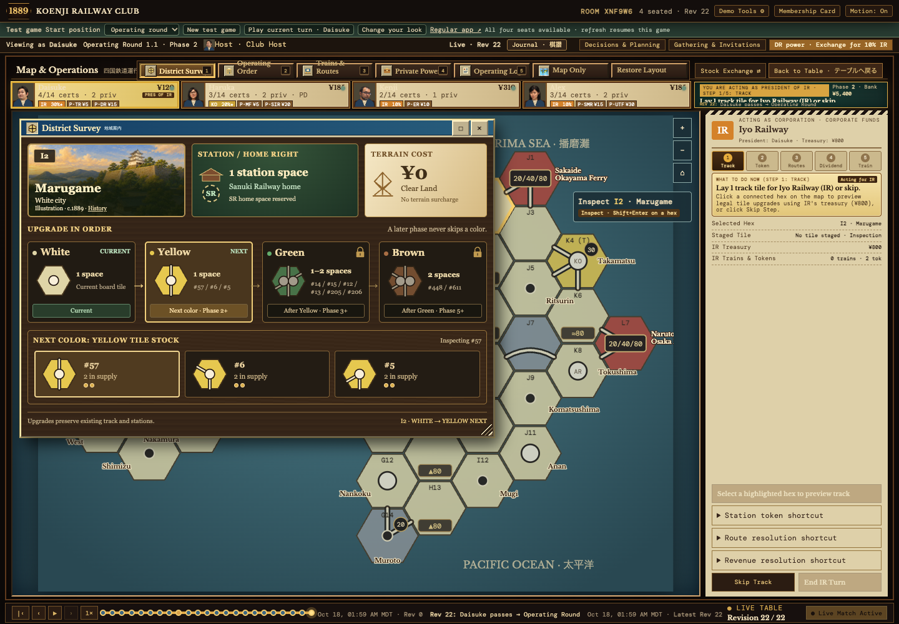
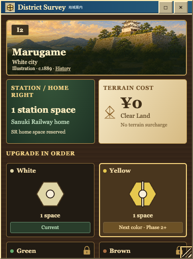
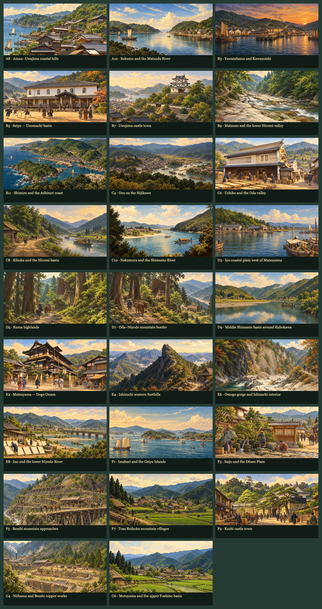
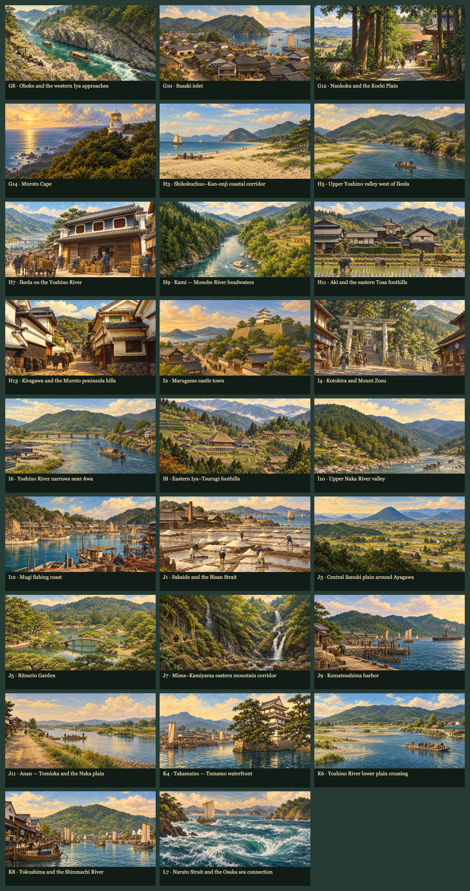

District Survey · Implemented
The live map area inspector now shows station rights, terrain, the required color/phase sequence, and finite tile stock in a compact illustrated window. Default size: 760 × 510; drag, resize, maximize, close and keyboard controls remain available.
Open District Survey in the map toolbar, or right-click a hex. Tile-stock buttons inspect specimens; construction stays on the operating ticket. The display follows the selected live or historical snapshot.
Production build, 90 JavaScript tests and 50 Python tests passed. All 52 hexes now have distinct photo-referenced historical illustrations, with sources and approximate countryside matches documented. Browser checks covered inspection without construction changes, a committed tile lay from the operating ticket, fixed and special-chain locations, and narrow/maximized sizing.
Open the 52-district historical artwork atlas · Artwork manifest and period-image replacement guide · Approved standalone proposal
Live inspector

Window on the map

Narrow window

All districts · artwork review

